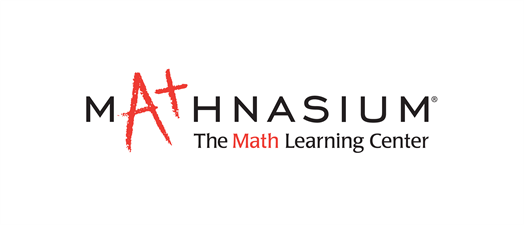

Intro
I am a Data Engineer experienced in cloud-based big data solutions, including data warehousing, data quality, data modeling, data ingestion, data transformation, APIs, and cloud computing.
I worked with SQL/NoSQL databases, ETL tools (SSIS, Matillion), orchestration tools (Apache Airflow), cloud data warehouses (BigQuery, RedShift, Snowflake), data processing framework (PySpark), infrastructure tools (Terraform), data visualization tools (Tableau, SiSense).
I love to engage in cross-team environments and learn new technologies, understand business requirements, and deliver high-quality data products to add value to the business.
If you would like to contact me, reach out to me here or through my LinkedIn profile
Education

Auburn University
Ph.D in Mathematics
GPA: 4.00/4.00
Advisor: Dr. Peter Johnson
Sep 2018 - Nov 2024 (Expected)
Auburn University
B.S. in Mathematics
GPA: 4.00/4.00
Summa Cum Laude
Aug 2014 - May 2017
Work Experience

Auburn University Department of Mathematics and Statistics
- Instructor of Record | Fall 2019 to present
- MATH 1120-D Pre-Calculus (Online) | Spring 2022
- MATH 1120-D Pre-Calculus (Online) | Fall 2022
- MATH 1620 Calculus II (Online) | Summer 2022
- MATH 1680-GL Business Calculus (Global) | Spring 2022
- MATH 1620 Calculus II | Fall 2021
- MATH 1680 Business Calculus | Spring 2020
- MATH 1120 Pre-Calculus | Fall 2019
- Grader | Fall 2018 to present
- Calculus I, II, and III, and Linear Algebra with some classes having up to 200 students
- Math Tutoring Center Coordinator | Spring 2021
- Organized online and in-person tutoring for an average of eighty university students per week
- Scheduled tutor shifts and communicated general announcements

Mathnasium | Madison, AL
- Math Tutor | Summer 2022
- Tutored students in grades K-12 in subjects ranging from basic arithmetic to calculus.
- Helped to create a fun and engaging learning environment for the students

Bayside Academy | Daphne, AL
- Math Teacher | Fall 2017 to Spring 2018
- Taught seventh grade Pre-Algebra
- Taught seventh grade Pre-Algebra
- Academic Coaching Center for Excellence (ACCE) Instructor | Fall 2017 to Spring 2018
- Worked with students experiencing learning differences and difficulties
- Taught classes that focused on schedule planning, healthy habits, study tips, etc.
Auburn University Honors Serves | Auburn, AL
- Auburn High School ACT Facilitator | 2016 to 2017
- Led two weekly tutoring sessions for high school juniors and seniors preparing for the ACT
- Communicated with volunteers and coordinators to plan the curriculum for each week
Auburn University Supplemental Instruction | Auburn, AL
- Physics Instructor | Fall 2014
- Hosted two weekly study sessions for around twenty university students
- Prepared worksheets and practice tests for students to review in-class material
Publications
- Edge colorings of Km,n with m + n − 1 colors which forbid rainbow cycles (published)
- Packing and covering directed triangles in directed simple graphs. (submitted)
- artially saturated graphs (in preparation)
Volunteer
Research Workshops
- Graduate Research Workshop in Combinatorics (GRWC) | Denver, Colorado | 2022
- Graduate Research Workshop in Combinatorics (GRWC) | virtual | 2021
- Masamu Advanced Study Institute (MASI) and Workshops | University of Pretoria, South Africa | 2016
- REU in Algebra and Discrete Mathematics | Auburn University | 2015
Conference Talks
- Partition-good Graphs | GRWC workshop talk | Denver, Colorado | 2022
- Saturation Numbers and Sat-sharp Graphs | GRWC workshop talk | virtual | 2021
- Edge Colorings Forbidding Rainbow Cycles | REU Conference Talk | Auburn University | 2015
Auburn University Science Olympiad | Auburn, AL (Spring 2021 to Spring 2023)
- Contributed in the organization and planning of different Science Olympiad events such as Wright
Stuff and Code Busters for middle and high schoolers in the region
- Monitored and advised students during each event
Auburn University Spring Into Science | Auburn, AL (Spring 2021 to Spring 2023)
- Helped organize and set up event for first through fifth grade students in the community
- Prepared a table demonstration and led kid-friendly activities that introduced abstract math and science concepts
Auburn Mathematical Puzzle Challenge (AMP’d) | Auburn, AL (Spring 2019)
- Engaged middle school students in a series of fun and challenging mathematics puzzles
- Helped organize event setup and communicated with other volunteers
Auburn University Honors Serves | Auburn, AL (May 2016 to May 2017)
- Auburn High School ACT Facilitator:
Led two tutoring sessions a week for high school juniors and seniors preparing for the ACT;
Communicated with volunteers and coordinators to plan curriculum for each week
Auburn University IMPACT | Auburn, AL (Feb. 2014 to present)
- Mentored children in the Boys and Girls Club through sports, games, and tutoring
- Organized and sorted clothes at Salvation Army Thrift Store
Church of the Highlands Dream Team | Huntsville, AL (November 2014 to August 2016)
- Highlands Kids Leader:
Helped to create a fun and engaging learning environment for elementary school children;
Led children in a variety of activities including worship, games, skits, and small groups
Awards & Honor
- Department of Mathematics and Statistics Graduate Award in Research | 2022
- Comer Medal for Excellence in Physical Sciences | Auburn University | 2017
- Dean’s Award for Academic Excellence | Auburn University | 2017
- Undergraduate Dean’s Research Award | Auburn University | 2017
- Andrew C. Connor Memorial Award in Mathematics | Auburn University | 2017
- National Merit Scholar | 2013
Hobbies
- Cooking
- Reading
- Longboarding
- Hiking
- Tennis
Contact Me
Contact